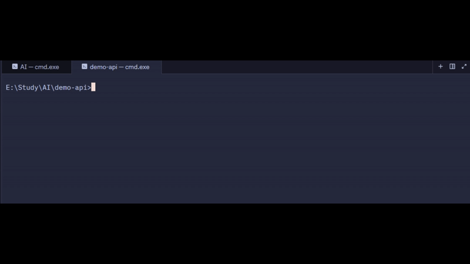
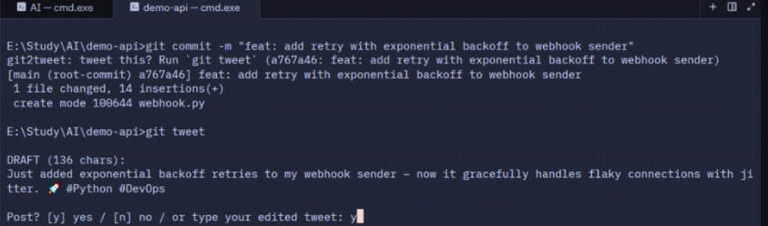
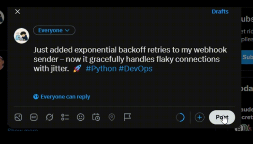

Commit as usual.
Nothing in your workflow changes.
MIT licensed · Python 3.10+
Git2Tweet reads your commit and its diff, writes the first draft, and waits for your approval. Nothing is posted until you say so.
uv tool install git2tweet

Nothing in your workflow changes.
git tweet.An agent reads the message and the diff, and skips trivial changes.
Accept, edit, or reject the draft. X opens with the text prefilled, and you press Post.


Drafts describe what you actually changed.
Typo fixes and tiny edits are skipped, with a reason. Override with --no-skip.
Every tweet needs your approval first.
It opens a prefilled tweet, so you press Post yourself.
It reads your local repo, so no GitHub token is needed and private repos work.
Groq by default, or Ollama to keep everything on your machine.
Keys, tokens, private keys and connection-string passwords are redacted, and .env and key files are never sent.
git2tweet init adds a hook that nudges you after each commit.
git tweet or g2t.
MIT licensed.
uv tool install git2tweet# or: pipx install git2tweetpipx install git2tweetpip install git2tweetgit2tweet config# choose a provider, paste your API key (once)uv tool install "git2tweet[ollama]", then git2tweet config.git2tweet init (undo with git2tweet init --remove).uv tool upgrade git2tweet.git2tweet init --remove in each repo, then uv tool uninstall git2tweet, delete the config folder, and revoke your API key.Then, in any git repo:
git commit -m "feat: add retry with backoff to the webhook handler"
git tweetThe commit message and diff, after known secrets are redacted. Files like .env, *.pem and *.key are excluded. Redaction is best effort, so use Ollama for sensitive repos.
Never sent
.env*.pem*.keySuggestions are welcome on GitHub.
No. It opens X with the draft prefilled and you press Post.
No. It never touches your X account.
The commit message and diff, after known secrets are redacted. Files like .env, *.pem and *.key are excluded. Redaction is best effort, so use Ollama for sensitive repos.
Groq (default) and Ollama. Both are set with git2tweet config.
Git2Tweet is free. Your model provider may have limits or charges, and Groq has a free tier with rate limits.
The agent judges the diff, so tiny or trivial changes are skipped. It tells you why. Run git tweet --no-skip to draft anyway.
No. It works with any local git repo.
Yes. The reminder hook runs on any commit, but some editors hide hook output, so run git tweet in a terminal.
Developed on Windows and checked on Linux. macOS hasn’t been tested yet.
No telemetry.
Not yet. Suggestions are welcome on GitHub.
Open an issue on GitHub.
Star Git2Tweet on GitHub — it helps other developers find the project.